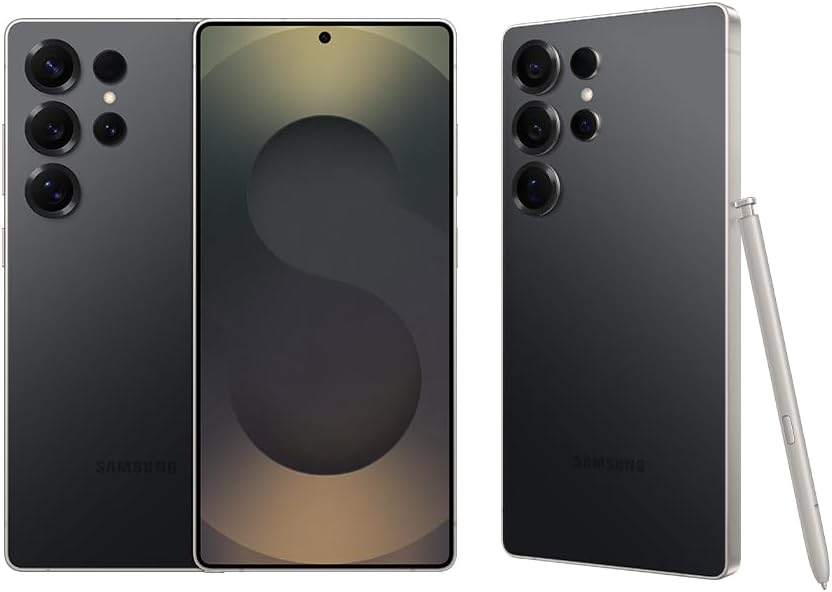

Galaxy S25 Ultra
Simples. Impactante
O design arredondado do Galaxy S25 Ultra expressa uma identidade unificada para a Galaxy S Series. Com sua armação de titânio elegante e forte e uma S Pen integrada, é uma visão ultramoderna da ousadia do design.5
R$2.000.00 OFF garantido com a troca smart
Galaxy IA
- Preto
- Azul
- Cinza
- Cinza Claro